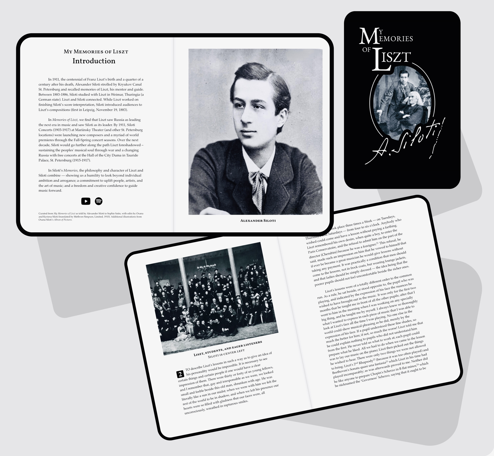

My Memories of Liszt
Siloti.org Edition 2023
Alexander Siloti's Memories of Liszt recounts an essential time in Siloti’s formation as a musical artist – focusing his interpretative skills and providing a life-long vision and mission.
Written in 1911 amid a pinnacle Siloti Concert season, Siloti's Memories retells the origin of his artistic mission. In Russia, Liszt saw a nation poised to lead the next era in music. In Siloti, Liszt found someone who could lead this endeavor. By 1911, Siloti Concerts (1903-1917) at Mariinsky Theater (and other St. Petersburg locations) were launching new composers and unveiling a myriad of world premieres. Over the next decade, Siloti would go further along the path Liszt foreshadowed — sustaining the musical soul of the people amid war and a changing Russia through weekly free concerts at the Hall of the City Duma in Tauride Palace, St. Petersburg (1915-1917).
In Siloti’s Memories, the philosophy and character of Liszt and Siloti combine — showing us a humility to look beyond individual ambition and arrogance; a commitment to uplift people, artists, and the art of music; and a freedom and creative confidence to guide music forward.
Curated from My Memories of Liszt as told by Alexander Siloti to Sophie Satin, with edits by Oxana and Kyriena Siloti (translated by Methven Simpson, Limited, 1910). Expanded endnotes and additional illustrations drawn from Oxana Siloti’s Album of Pictures. Accompanimental playlists complement the narrative with renditions of the works mentioned.
Book formats Accompanimental playlists
